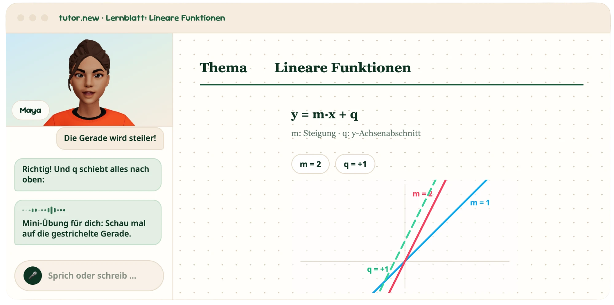

Mehr Lust auf Lernen
Selbstbewusstsein statt Wissenslücken
Eigenständiges Denken
1 · Zielbild für Lernende und Lehrpersonen
2 · So machen wir es für Lernende

3 · So machen wir es für Lehrpersonen
4 · 10-Jahres-Ausblick: Rolle der Lehrperson